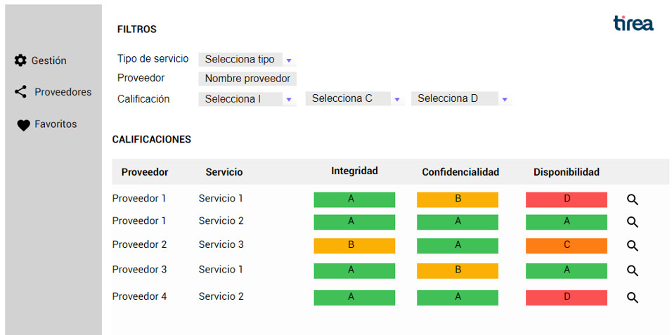
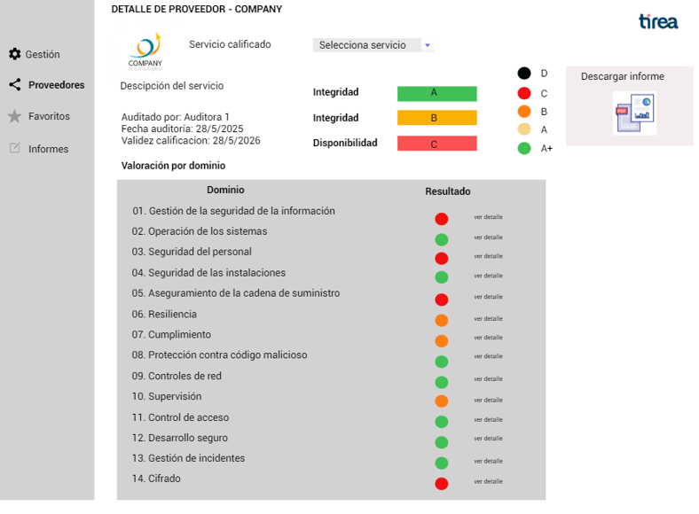
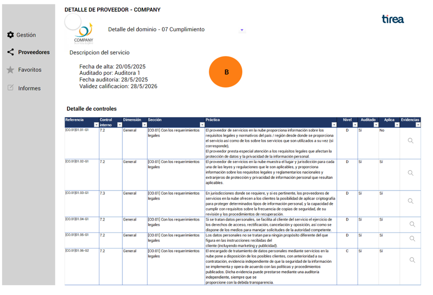

1. Apertura y Contexto
La próxima sesión se centrará en definir colaborativamente el Producto Mínimo Viable (PMV) para una plataforma centralizada ("Plataforma Concentrador"). Esta plataforma estará destinada a optimizar y estandarizar la gestión de riesgos de proveedores TIC en el sector asegurador, en línea con el reglamento DORA.
Los objetivos principales de esta sesión serán:
- 1 Validar y enriquecer la propuesta de valor de la plataforma.
- 2 Co-definir las funcionalidades esenciales del PMV.
- 3 Identificar prioridades y crear una hoja de ruta para el desarrollo del PMV.
Avances desde la Última Reunión (Conversación Leet-CCI):
- Principales sinergias identificadas con [Iniciativa/Proyecto de Leet-CCI].
- Puntos clave discutidos y conclusiones preliminares.
2. Definiendo el Producto Mínimo Viable (PMV) – ¿Qué Esperamos?
El propósito de esta sección es centrar la discusión en la definición concreta del Producto Mínimo Viable. Exploraremos qué funcionalidades y valor tangible debería ofrecer la plataforma en su primera versión funcional, considerando una perspectiva realista de desarrollo y las necesidades prioritarias de los usuarios clave, como los CISOs y las entidades aseguradoras.
Visión General del PMV:
Si el PMV se desarrolla en aproximadamente 4 meses, ¿qué deberíamos tener tangible y funcional para el 1 de octubre de 2025?
Perspectiva del CISO / Entidad Aseguradora para el PMV (01/10/2025) – Puntos de Partida para Debate:
Una plataforma con X proveedores calificados:
Propuesta inicial: ¿40 servicios (ej. los de Pinakes)?
Preguntas para debate:
- ¿Es realista este número para el PMV? ¿Cuál sería un objetivo más adecuado?
- ¿Cuáles serían las fuentes prioritarias para estos servicios iniciales?
- ¿Qué tipología de servicios aportaría mayor valor en esta primera fase del PMV?
Un listado de proveedores TIC críticos:
¿Input de la DGS, construcción colaborativa, u otro origen?
Preguntas para debate:
- ¿Cómo se obtendría y mantendría actualizado este listado en el PMV?
- ¿Qué criterios definirían a un proveedor como "crítico" para el alcance inicial del PMV?
Un catálogo de servicios críticos (a incorporar progresivamente):
Preguntas para debate:
- ¿Cómo se definiría y priorizaría este catálogo para el PMV y las fases subsiguientes?
- ¿Qué rol deben jugar las entidades aseguradoras en esta definición y priorización?
Compromiso de las Entidades Aseguradoras (EEAA):
Necesidad de compromiso para incorporar y utilizar los servicios críticos calificados a través de la plataforma.
Preguntas para debate:
- ¿Qué nivel de compromiso (ej. número de entidades, volumen de consultas) es esencial para el éxito del PMV?
- ¿Cómo podemos incentivar y asegurar este compromiso temprano? ¿Qué beneficios tangibles deben percibir?
Auditoras Incorporadas al Modelo:
Actualmente se menciona BDEO y los propios de LEET.
Preguntas para debate:
- ¿Cómo se facilita la integración de otras auditoras al modelo para el PMV? ¿Qué requisitos deben cumplir?
- Para entender el contexto: ¿Cuántas auditorías de este tipo encargan las compañías anualmente? ¿Quién asume el coste actualmente?
- ¿Qué valor añadido específico ven las auditoras en participar en este modelo desde la fase de PMV?
Business Case del PMV – El Ahorro para la Compañía:
¿Qué me ahorro como compañía (tiempo, recursos, costes directos/indirectos) si tengo acceso a esta calificación a través del PMV?
Preguntas para debate:
- ¿Cómo podemos cuantificar los beneficios del PMV para una entidad aseguradora?
- ¿Qué elementos del business case son más atractivos para impulsar la adopción temprana? ¿Podemos identificar casos de uso específicos?
3. Estructura de la Sesión de Co-creación por Ejes
En esta sección, dividiremos la discusión en tres ejes estratégicos: Técnico-Funcional, Comunicación y Gobernanza, y Modelo de Negocio. El objetivo es profundizar en cada área para asegurar una definición completa y equilibrada del PMV, recogiendo inputs específicos que alimentarán los planes de desarrollo, comunicación y sostenibilidad de la plataforma.
3.1. Eje Técnico-Funcional del PMV
Objetivo: Definir las funcionalidades esenciales e irrenunciables para que el PMV aporte valor desde el día uno.
Preguntas guía para la discusión:
- Administrador (TIREA): ¿Cuáles son las 2-3 funcionalidades críticas para la gestión y operación del PMV (altas, validación básica de calificaciones, etc.)?
- Entidad Aseguradora: ¿Qué información mínima necesita consultar y cómo (filtros básicos, visualización)? ¿Son adecuados los mockups presentados como punto de partida para el PMV?

Mockup 1: Vista de Calificaciones y Filtros.
Mockup 2: Detalle de Proveedor.
Mockup 3: Detalle de Dominio (Ej. Cumplimiento).
- Auditora: ¿Cuál es el proceso más simple y efectivo para que las auditoras aporten la información de calificación al PMV? ¿Qué formato de datos es preferible?
- Proveedor: ¿Qué interacción mínima necesita el proveedor con la plataforma en el PMV (visualización de su estado, datos de contacto)?
- Flujo de Calificación Simplificado para el PMV: ¿Cuáles son los pasos mínimos indispensables y la información crítica en cada uno? ¿Cómo minimizamos la fricción?
- General: De las funcionalidades ya identificadas, ¿cuáles son absolutamente "must-have" para el PMV y cuáles pueden posponerse ("nice-to-have")? ¿Hay alguna funcionalidad no contemplada que sea crítica para el PMV?
3.2. Eje de Comunicación y Gobernanza del PMV
Objetivo: Establecer las bases para la comunicación con los stakeholders clave y el modelo de gobernanza inicial.
Preguntas guía para la discusión:
- Adhesión de Entidades Aseguradoras:
- ¿Cómo logramos la incorporación de una masa crítica de entidades aseguradoras para el lanzamiento del PMV?
- ¿Cuál es la propuesta de valor más convincente y el mensaje clave para ellas en esta fase inicial?
- Relación con la DGS:
- ¿Cuán prioritario es el contacto con la DGS antes o durante el desarrollo del PMV?
- ¿Quién debería liderar esta aproximación (TIREA, un grupo de entidades, mixto)? ¿Cuál sería el objetivo y mensaje principal de esta primera comunicación?
- Gobernanza Inicial del PMV:
- ¿Qué estructura de gobernanza mínima se necesita para el PMV (ej. comité de seguimiento, grupo de usuarios pioneros)?
- ¿Cómo se tomarán las decisiones clave durante la fase de PMV y su evolución inmediata?
- Comunicación con Auditoras y Proveedores: ¿Cómo les comunicamos la iniciativa para asegurar su participación y colaboración en el PMV?
3.3. Eje de Modelo de Negocio del PMV
Objetivo: Recabar inputs para la definición de un modelo de adhesión y sostenibilidad viable a partir del PMV.
Preguntas guía para la discusión (orientadas a la propuesta del 02/06):
- Plan de Adhesión para el PMV:
- ¿Qué elementos debería incluir un plan de adhesión inicial para que sea atractivo? (ej. fases, beneficios para "early adopters").
- Cuota de Adhesión/Participación para el PMV:
- ¿Se contempla algún tipo de cuota (simbólica, de coste) para participar o acceder al PMV?
- Si es así, ¿qué modelos podrían ser viables y qué debería cubrir esta cuota inicial?
- Claves del Éxito del Modelo (desde la perspectiva del PMV):
- ¿Cuáles son los 2-3 factores críticos para que el PMV sea percibido como un éxito y siente las bases para la sostenibilidad del modelo completo?
- Valor Percibido y Métricas del PMV:
- ¿Qué indicadores clave de rendimiento (KPIs) nos permitirán medir la adopción y el valor generado por el PMV? (ej. número de consultas, proveedores calificados accedidos, tiempo ahorrado estimado).
4. Próximos Pasos
Esta sección se dedica a consolidar los acuerdos alcanzados y a definir claramente los próximos pasos, asignando responsables y fechas límite tentativas. El objetivo es asegurar que la sesión de co-creación se traduzca en acciones concretas y un plan de trabajo claro para avanzar en el desarrollo del PMV y los aspectos estratégicos asociados.
Recapitulación de Acuerdos y Puntos Clave por Eje.
Asignación y Validación de Próximos Pasos:
Eje Técnico-Funcional:
- Acción: Consolidar los requisitos detallados del PMV (basados en los inputs de esta sesión).
- Responsable: [A definir] | Fecha Límite: [A definir]
- Acción: Elaborar un backlog priorizado para el desarrollo del PMV.
- Responsable: [A definir] | Fecha Límite: [A definir]
Eje de Modelo de Adhesión y Negocio :
HITO CLAVE: 02/06/2025 – Presentación de propuesta formal sobre:
- Plan de adhesión detallado.
- Modelo de cuota de adhesión/participación.
- Identificación y desarrollo de las claves del éxito del modelo.
- Acción (continua): Definir estrategia y acciones concretas para la incorporación de Entidades Aseguradoras.
- Responsable: José Luis Mayo (con apoyo de [A definir])
Eje de Comunicación y Gobernanza:
- Acción: Definir el plan y los responsables para el contacto inicial con la DGS.
- Responsable: [A definir] | Fecha Límite para el plan: [A definir]
- Acción: Esbozar un plan de comunicación para el lanzamiento del PMV dirigido a los diferentes stakeholders.
- Responsable: [A definir] | Fecha Límite: [A definir]
Pregunta abierta al grupo:
¿Qué otros próximos pasos consideran cruciales o qué dependencias importantes debemos tener en cuenta?
5. Cierre de la Sesión
La sección final está dedicada a resumir los acuerdos clave y las decisiones tomadas durante la sesión. Es también el momento para agradecer a todos los participantes su implicación y reafirmar el compromiso conjunto con los siguientes pasos del proyecto Plataforma Concentrador.
- Resumen final de los principales acuerdos y decisiones tomadas.